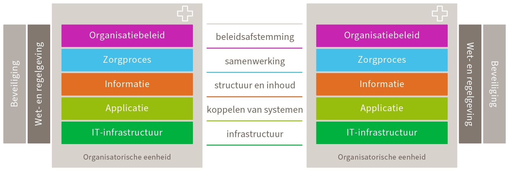

Toelichting op de verfijning van het vijflagenmodel
Met zijn vijf niveaus roept het model in afbeelding 1 de vraag op hoe het zich verhoudt tot het bekende lagenmodel van Nictiz. Met dat model bestaan vergaande overeenkomsten en geen tegenstrijdigheden. Afbeelding 1 is op meer manieren een wezenlijke verfijning van het Nictiz lagenmodel.

Afbeelding 9: Lagenmodel van Nictiz.
Ten eerste wordt het niet omringd gedacht door organisatie- of systeem-grenzen. Het is niet een gelaagd model van organisaties of systemen, maar een model dat op alle schalen van toepassing is, en gebruikt wil worden als achtergrond waartegen elke specificatie in het zorginformatiestelsel zijn plek krijgt, of het nu op Europese schaal is, of op de schaal van vele federatieve niveaus kleiner. Zo geeft het alle specificaties hun plaats en hun verband, door verschillende graden van algemeenheid en bijzonderheid heen.
Ten tweede brengt het ook een horizontaal onderscheid aan tussen verwerking en uitwisseling. Een onderscheid dat van wezenlijk belang is voor de API-strategie en bijvoorbeeld haar bijdrage aan informatiebeschikbaarheid.
Ten derde kent afbeelding 1 geen zorgorganisaties en zorgprocessen (althans niet als toplagen) zoals in het Nictiz lagenmodel. Toch staan zij wel degelijk in het model, namelijk als de betekenis van de taal: op taalniveau. Afbeelding 1 gaat louter over informatie en alleen via de betekenis van informatie (taalniveau) over zorg. Het zorgstelsel is dus de betekeniswereld van die informatie, maar geen specificatiedoel voor het zorginformatiestelsel zelf; natuurlijk wel voor het zorgstelsel. De zogenoemde zorgkwaliteitsstandaarden bijvoorbeeld moeten daarom niet tegen de achtergrond van afbeelding 1 worden gespecificeerd. Andersom moeten de informatiespecificaties, waaronder de API-specificaties, dus ook niet rechtstreeks in de zorgkwaliteitsstandaarden worden opgenomen.
De relatie tussen zorgstelsel en zorginformatiestelsel is niet een geheel-deel-relatie, maar (saillant genoeg) zelf een zorgrelatie: het zorginformatiestelsel zorgt voor informatie voor zorg. Dat betekent ook dat informatie niet zozeer een materiaal is dat door zorgprocessen 'stroomt', maar dat informatie 'zorgt voor betekenis' in zorgprocessen1. Anders is het waardeloos.
Ten slotte onderkent afbeelding 1 drie niveaus binnen wat in het Nictiz lagenmodel één laag is: de informatie-laag in het midden. Die laag wordt in het canvas opgedeeld (van wat vooralsnog vooral als logische laag is behandeld) tot ook een conceptueel niveau (taal) en een organisatieniveaui. Zo zijn er toch weer vijf niveaus, maar niet dezelfde als de eerdere lagen. De onderste twee lagen komen wel overeen, zij het dat het Nictiz lagenmodel het horizontale onderscheid tussen verwerking en uitwisseling niet kent.
En zo verschijnt er in het specificatiecanvas ook een organisatieniveau maar dat gaat specifiek over informatie-organisatie. Informatie is een middel dat − hoe dienstbaar ook aan hogere zorgdoelen − onherroepelijk zijn eigen aspectbeleid vraagt onder de hoede van CIO-achtige verantwoordelijkheden. Zolang informatie die aandacht moet missen, zal een duurzaam effectief zorginformatiestelsel buiten bereik blijven.
-
Dit zorgt er onder andere voor dat informatiebouwstenen als strikt logische eenheden moeten gaan worden gezien en niet, zoals nog gebruikelijk, ook als concepten. ↩